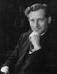
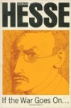

|
|
Common Sents as an Intellectual Tradition, a Short Discussion of Related Literature and Arts |
As I've strolled through life I've met many people from many places with many divergent beliefs and opinions. Many opinions are held so strongly that disagreements are taken to reflect on the inadequacy of another's character. Nonetheless, the morals and virtues held by these people are similar -- they would often readily agree that their guest's morals pass within their set of recognized higher virtues. Virtues such as freedom, autonomy, justice, humble material well-being, respect for traditional culture, & sanctity of the individual (particularly, as it often is, themselves) are all regularly deemed quite decent. I'm sure you can think of a few yourself, of which I would slap my forehead and proclaim, "Of course, how could I have forgotten that one?" Sometimes, it may be felt that the exact ordering of the other's morals to be perhaps misguided, but that by no means alienates that person from the realm of the civilized and wise.
Then, how can it be, that people disagree on judgements of who and what is good or evil?
The following list is by no means complete or of the best examples. I present the items which found themselves at the top of my mind or at the front of my bookshelf. They are organized here in alphabetical order as to not compare the importance of the items against each other.
In my experience, one cannot appreciate the value of this project without understanding the problem I'm attempting to solve. It is an old, universal and dangerous problem. Indeed, the 20th and 21st century have shown the value of controlling the narrative to influence collective behaviour. Nations rise or fall based on the beliefs of the people. The USSR splintered for many reasons, one contributing factor was after the Communists began to soften their grip on narrative control. This control had sheltered them from previous popular oversight. Once the sudden weight of the free press publicizing the many faults and shortcomings of the government materialized, the people lost their confidence in the plausibility of a workable and humane communist system, dooming it. More recently there was a topic closer to the Western eye: the Iraq War. Americans wished to wage a war where we'd be the good guys. Therefore, "winning" the Iraq War was predicated on winning over the "hearts and minds" of the Iraqi people -- a modern concept that's laughable when set just one or two hundred years prior. And anyways, it is impossible to win this goal without a hard lock on major, good press in Iraq. Now finally, closer to home, so close to home it's affecting our neighborhoods and families, we have political polarization. Information campaigns on unprecedented scales have caused largely unprecedented political polarization, all focussed on the 2020 presidential election. This was no small game; these campaigns were to steer the most powerful and influential country in the world, which would have no small global repercussions.
The technological and older social techniques to accomplish this have been fairly well developed over the past 50-100 years and are still expanding further. But, there remains one great weakness of centralized narrative control -- the opinions tend towards the fashionable and to the absurd. One can't warp a landscape without leaving wrinkles. There are two unescapable wrinkles an individual can search for to find evidence of editorial inconsistencies with some agreeable notion of the "Truth". I admit, I arrived at these two notions through personal experience, and am open to more techniques.
What I intend to do, is to take the liberty of vastly simplifying all the news of the world into statements stating "This is good" and "This is bad". Once I get a daily injection of all the opinions throughout the world, I can find, probabilistically, what this newspaper thinks about this person or that company. With that out of the way, it's a small step to comparing opinions against each other, look for patterns, look for changes in opinion over time, and watch how opinions and topics sweep the globe. I believe Goodness and Badness can be represented on a two-dimensional scale: "Are good or bad things happening to X?" and "Is X is doing good or bad things, is it inherently moral, benevolent?"
This project is not meant to condemn one group or another in the way of conspiracy theories, but to globalisize a reader's perspective, to quantify the changes in the media due to editorial shifts, and to begin to speculate how one's personal beliefs could be influenced by where they live and what they read. At the same time, by quantifying the media landscape, I hope I can help individuals overcome societal ignorance and prejudice.
The following are meant to show that inconsistency and universality are sufficient, and that sudden, unjustified narratives occur.
Within the Chadwick chapter, we learn of historical conversations of the 1800's around the power of the newspaper to influence society and unglue previously stable societal norms. The recognition of journalism as a pulpit to balance the power to reflect, magnify, focus and direct public indignation existed since its conception. This power played a roll in, or at least reflected, the boosted turn of the century anti-semitism, fracturing the church, and progression of political revolutions. If I could analyze 19th century European data, I would expect to see results such as, "Last year, France was pro-Catholicism. This year, severely anti.", and "While France is going off at churches, Germany's seeing an uptick in Pro-Marx and Hegel stories. Funny, they seem split on the benevolence of the Church."
This is all possible because the public prefers to consume "pugnacious" news stories without a higher perspective to demand necessarily factually correct content. He writes that, "The strength of the press was against, not for; criticism, not construction. It was adapted to show the ills of society, less adapted to showing remedies." The crucial insight is how easy this makes the job of media-analysis. There is no need for intricate algorithms to track the arguments bouncing around, to search for facts or to decipher the exact relationship of the objects of discussion. A complaint is a complaint, a complement is a complement, the readers are unlikely to be building complex dependency webs in their heads, but rather to look for "Who are the goodies, who are the baddies, and what have they done now?" This combined with that a man's memory is short and anyways preoccupied, allowed for the famously soviet act of historical revision to be an effective tool.
He then continues, "Its searchlight fastened upon the inadequacies of the Church ... by exposing old abuses." These criticisms were a choice to publish; they had no timely component, and the inherent morality of the Church was not altered, regardless of its new attention. It had not itself done anything new that was immoral. Nevertheless the Church suffered from the deliberate galvanisation of the sceptics. Chadwich further pushes this point when he writes that just having the discussion affects the presupposition of the reader, just like how the state of a quantum bit is irrevocably affected by its observation, such that any publishing platforms has the power to undermine any status quo of the national conversation: "If loyalty, or sobriety, or honesty, become the sport of public debate and public contradiction, their moral force is weakened for those who wish to weaken them. And if the truth of religion becomes a matter of public debate in newspapers, the effect is not like a debate on the truth of utilitarian philosophy. Once religious beliefs are equated with philosophical opinions and so become matters of purely intellectual argument, scepticism has won." It's questionable what type of categories would be susceptible to this. I myself don't know, but would the concept of Patriotism be influenced by the discussed holiness of your country? Or would simply becoming habituated to no concept being stable to erect your philosphical system on render you a philosophical vagrant, to be helplessly pushed from moral system to moral system at the will of the Other? This sounds fairly hokey, it must be past my bedtime.
|  |
Owen Chadwick was a celebrated British Ecclesiastical History professor at Cambridge University in the second half of the 20th century. More or less, his books study the origins and development of Christianity, framed as how Christian thought developed through power conflicts with state governments, historical personalities, and other spheres of influence and power. One of these spheres of influence in contest was the ascendance of the media. He explored just what that meant in a short section of his book, The Secularization of the European Mind in the 19th Century. I can already hear the criticisms that "Journalistic style and process in the 19th century is not the same as today, these generalizations don't hold." In my defence I share this chapter to show that just a landscape has existed before and may very well exist again in the future, in a foreign country, or as a subculture of our society today. Regardless, it is worthwhile watching out for. |
In the years 1860-80 contemporaries were agreed that the tone of society in England was more 'secular'. By that they meant the atmosphere of middle-class conversation; the kind of books which you could find on a drawing-room table, the contents of the magazines to which educated men subscribed whether they were religious or irreligious, the appearance of anti-Christian books on bookstalls at the railway station, the willingness of devout men to meet undevout men in society and to honour them for their sincerity instead of condemning them for their lack of faith.
Later Victorians sometimes looked for explanation by machine. Some of them believed that they descried a machine which by its action confirmed the theory of Stephen: namely, the printing press of the modern newspaper. The Victorians asked themselves, was the modern newspaper secularizing in its effects -- and if it was, as Pope Pius IX and others believed, why? Those who asked themselves this question, did not usually mean what we mean. They meant that gambling news received more space, or the sports pages turned men's minds to triviality, or information on stocks and shares was unhealthy, or reporting of divorce cases lowered the morals of the people. Their attitude to men of the press was not our attitude. Queen Victoria told Lord Palmerston that journalists were not to be received, and got one of those courteous but dusty retorts which made him the least flatterous of her prime ministers. In an English novel of 1856, entitled Perversion, the villain sank morally, downward and downward, until he reached the abyss of writing leaders for The Times. Two years before that even the historian Michelet congratulated himself on having grown up under the Empire, when happily (as he said) the press did not exist.
Those who study leading Victorian newspapers in Britain are almost surprised that men asked the question whether the newspaper secularized by being a newspaper. British newspapers of that day lend little support, prima facie, to the theory. The press achieved freedom, true, because it was unstoppable; second, because it was needed by all parties. Men continued to argue, occasionally, that control was necessary to true freedom; that most people had neither information nor ability to form sound judgement upon great questions; that stability was precarious, and therefore an uncontrolled right to criticize was dangerous; that those who talked about freedom of the press hoodwinked themselves to the real freedom, which was the freedom of powerful men or corporations. To the contrary, it could not be denied that the press was 'the open eye of the people's mind', that without it democracy was not possible, that it was the way of a people to self-knowledge, and the one liberal instrument which enabled society to advance by free discussion.
The press, as Marx said, reflects society. But society is now a mass of tensions, contradictions, opinions. Therefore the press becomes the means by which tensions frame themselves. Hence it articulates oppositions which until that moment were partly inarticulate and therefore partly concealed.
To articulate opinion is not to create it. Nor is it to leave it as it was. Men understand their opinions better when they articulate them. They not only frame their opinion into words, they form the opinion by framing it. Hence the press became the organ which for the first time turned a mass of citizens into political animals. As such it was an indispensable tool of democratic constitutions.
In framing opinion, it impassioned it. The growing mass of the people which read newspapers could follow politics only in outline. They did not want the details of political information from their journal, and if they got them they passed on hurriedly. They did not desire news about Parliament or foreign policy. They looked instead for symbols of the political struggle, for broad schemes, for attitudes which were articulated less by news than by slogans. The citizen who newly became political wanted to take sides. He wished his opinion confirmed, supported, and made emotional. The new reader liked the chance of being indignant for his cause. Moral indignation became the simplest expression of an articulated viewpoint towards politics or society.
They took sides in the name of ideas. But the ideas necessarily remained misty. Only if they were general could they command a broad enough area of support among the people. When the country was radically and socially divided, as in France, the ideas were platforms of indignation and therefore negative. In France, the scapegoat came to play an important part in some forms of public opinion. The classical example is antisemitism. A section of the French press, between 1870 and 1914, fastened upon the Jews, a symbol of passion which men felt inarticulately, and which the antisemitic press focussed for them and thereby infuriated. Anticlericalism in France was first, a feeling in republican bellies; secondly a way of holding together political parties which agreed on little else; and thirdly, a way by which the republican press could form, transmit, articulate and impassion, the feeling in the belly. This was possible because, like antisemitism, anticlericalism was anti.
Realities not only needed turning into symbols. They could be understood better by a wide public if these symbols were made pugnacious. To interest crowds you must provide a fight. Only so could spectators be excited, take sides, become emotional, feel suspense, charge their moral convictions; only so could they be lured to go on reading; and only so would they cease to be passive, march with a leader, identify with a cause. No man is interested if he does not care. This was why the new national newspapers from 1860 onwards, though indispensable to the working of popular sovereignty, could never carry the load of popular sovereignty which optimists laid upon them. To carry all that load would have meant a capacity to interest all of us in a mass of tedious detail; and in the moment of such an attempt indifferent readers ceased to read and the instrument of popular education failed. The weight of the press was not argument but assertion; not the making of opinion but its strengthening. It confirmed viewpoints, brought like-minded men into association, and so made their opinion more potent in action. Since rival opinions were expressed more loudly and felt more forcibly, the result sometimes gave the impression of confusion. It is possible, therefore, that the coming of the press weakened (more than the coming of modern science) the established moral agreements upon which the consensus of European society rested; and with these moral agreements was integrated religion. It is possible that the coming of the press pushed ordinary readers towards a feeling of the relativity of all opinion and especially the relativity of moral standards. This is speculation, not to be derived (as yet) from historical evidence. But it looks possible. And according to one leading theory, the demolition of an established consensus in moral authority was fundamental to the secularizing process.
The strength of the press was against, not for; criticism, not construction. It was adapted to show the ills of society, less adapted to showing remedies. Its searchlight fastened upon the inadequacies of the Church and helped the ecclesiastical reforms of the nineteenth century by exposing old abuses. It strengthened Whigs everywhere , even when it was Tory, because its genius lay in change, and not in preservation. It made fanaticism look more foolish by printing it. For all its function of breeding parties it made intolerance more disreputable. The rise of ecumenical movement within Christendom was almost certainly connected with the new power of the press as well as with new means of transport. 'The press', said a celebrated English editor of the Birmingham Post in 1893, Mr Bunce, 'has tempered the Church in political ecclesiastical and educational conflicts; it has helped towards stimulating criticism, liberalising theology, and moderating sacerdotalism.' It has rendered, he said, an 'incalculable service in enlarging and defending the freedom of the laity'.
But newspapers also followed opinion. The first duty of the newspaper was to survive, and enable its proprietors or shareholders to live. Therefore it must capture and keep a broad public. Since the broad public in Britain was Christian (even if not churchgoing), the newspaper could not offend the deeper convictions of that public. The Times, the weekly Guardian, the Manchester Guardian had no desire to shock convictions. They addressed themselves to a civilized Victorian group of educated men, and sought to present the religious aspect of life, among its manifold varieties. Both The Times and Manchester Guardian carried penetrating, sometimes learned, reviews of works of theology. They seldom printed matters which disturbed any but fanatics. Those readers who were interested in divinity were given pabulum enough. The Times greeted the Revised Version of the New Testament (May 1881) with four leading articles, and by a review (by Henry Wace, who since 1863 supplemented the stipend of a London curacy by writing leaders and reviews for The Times). Charles Kingsley reviewed a book about travel in the South Seas and took the chance of 'rebuking levity' and 'having a hit at the missions of the Protestant Dissenters and the Catholics'. Newman's austere Grammar of Assent received a serious review; and R. W. Church was allowed to write two superb articles on the theologian's theologian J. B. Mozley. A remarkable tribute to the power of a newspaper's readers may be found in a letter by a very bold editor of The Times dated 11 March 1873: 'Erewhon, I won't touch. It could not be reviewed as favourably as perhaps it deserves without alarming the "goodies" -- and they are powerful.'
The example of the British national and provincial newspapers (and of the German provincial newspapers) appears to show that the mere existence of the press was not, by mechanics alone, a secularizing force. Men were more easily able to buy athiest literature if they wished. They were more easily able to buy religious literature. If it be assumed that religion is all illusion, and reasonable men need only to have this pointed out to perceive its truth, then the press as a mere communicator of knowledge -- e.g. that Strauss or Renan existed -- was an anti-religious force. One or two of the older histories of 'freedom of though' worked upon this axiom. But no one now accepts this axiom. It bears no relation to what happened during the later nineteenth century. The press was a force for more than one kind of opinion. The Pope of 1889 was far more influential than the Pope of 1839 because the later Pope was surrounded by the press and the earlier Pope was not. Still, even in Britain men had the sensation that newspapers were a secularizing force.
Was it only that the most powerful man in the cathedral close at Barchester was not Bishop Proudie, nor Archdeacon Grantly, nor Dean Arabin, but Tom Towers, thundering from his newspaper office in London? Was it that the most powerful man in French Catholicism was no Archbishop Darboy of Paris (though Lord Acton thought him the most intelligent bishop he had ever met), nor Bishop Dupanloup of Orleans, nor Bishop Pie of Poiters, but Louis Veuillot, layman and editor of the newspaper Univers? Was it simply that a new instrument of power came into society, and the wielders of that power were detached, did not spring from the ordinary sources of authority hitherto known? As the teaching profession rapidly became lay because schools were needed in numbers far beyond those which Christian ministers could supply, so the guides of public opinion became lay because only machines could reach out to members of a society grown urban. Journalists established themselves as a profession in the same decade when teachers established themselves as a profession distinct from the clergy. And some of the new journalists treated their medium consciously or half-consciously as though it was a pulpit. John Morley used the Fortnightly Review and C.P. Scott used the Manchester Guardian for preaching; in Morley's case, doctrine unwelcome to conservative churchmen. They served as the pulpit three hundred years before; confirming the faithful, rebuking vice, controverting opponents, at once followers and leaders of public opinion.
For the new journalist was conscious of power. 'From the first', wrote Wickham Steed of The Times, 'I conceived journalism as something larger than the getting and the publication of news... I looked for and found in it a means of working out and applying a philosophy of life, a chance to help things forward on the road I thought right... While under modern conditions the making of a newspaper must necessarily be a business, the making of that which newspapers exist to print is at once an art and a ministry.'
It is a large, indeed a noble, sense of vocation. We are reminded, at the opposite extreme, of the rebuke issued by the second congress of the third International to French proletarians: 'You keep the chief place in your newspapers for parliamentary trivialities and little happenings of bourgeois society. Those newspapers do not know how to become, and do not want to become, the true mouthpieces of the revolutionary anger of the masses.'
A chasm sundered Wickham Steed from the third International. But they illustrate the proposition, that every journalist, if he was a serious journalist, wanted to proselytize; and that if a newspaper was a newspaper, that is, if it was more than a notice of information put up by a Roman quaestor or a commissar, it must intend some point of view.
'There is little doubt', it has been said, 'that the expansion of the press made the people of England sit a little more detachedly to religious commitment. It is not quite clear why that should be so.' We seek an answer along the lines of a new profession of laymen, necessarily writing sometimes on matters religious or ecclesiastical and often from points of view more detached than any writers who previously wrote upon such subjects; a machine of communication by its nature not merely a machine to communicate information, but by that nature rather critical than constructive, tending towards the weakening of authority; whether that authority belonged to government and was clothed in trappings of power which, however capable of hoodwinking men, could not deceive the machine, or whether that authority lay in social axioms and social convention.
...If loyalty, or sobriety, or honesty, become the sport of public debate and public contradiction, their moral force is weakened for those who wish to weaken them. And if the truth of religion becomes a matter of public debate in newspapers, the effect is not like a debate on the truth of utilitarian philosophy. Once religious beliefs are equated with philosophical opinions and so become matters of purely intellectual argument, scepticism has won. The vast majority of mankind live by commonplaces, half-truths to which they become attached and accustomed and which, without thinking deeply, they suppose to be true. Unlimited freedom of thought means that all these commonplaces are cast into a cauldron and men no longer have stable principles to guide their moral beings.
The newspaper was sometimes imagined to be the tool of direct government by the people, as though it fed every citizen with all the information that he needed and so enabled him to make up his unaided mind on each issue. ... By its nature the newspaper could not serve that function. It could present news only in a selection with special attention to pugnacious. And it could not enable most men to form an opinion on every point under discussion partly because it had not the means of presenting adequate information, and partly because most men could not be influenced and read the paper only to confirm what they already believed. We shall do well not to exaggerate the power of the machine in its impact upon the thinking of educated society about the mysteries of the soul.
When we contemplate a notion like secularization, we ask how and why certain ideas, several of them difficult or very difficult, impinged upon a lot of ordinary men and women not used to analysing abstractions. This aspect of public opinion has been studied in other contexts, like war and politics, and historians of the intelligence can learn from such investigations. What stands out is the necessity for symbols or, as they have been called, stereotypes; easily identifiable names or persons or pictures or issues. Most men -- most educated men -- do not understand evolution. The word can only be a symbol, a substitute for understanding, a point of adherence for a faith, which bears small relation to what happened (so far as scientists can discover that). The instance shows that the symbol or stereotype does not need to be definite, nor to offer a picture with lines that ordinary men can see. The most experienced of journalists tell us that 'at the level of social life, what is called the adjustment of man to his environment takes place through the medium of fictions'. By fictions he did not mean lies. These symbols might be false, but they might be as true as the molecular models which scientists construct in laboratories to explain their observations. We act like men seeing through a glass darkly. Our world is too big and too complex to be understood. Yet we cannot move in it without trying to see what cannot be seen, and so we move with the aid of symbols or stereotypes, names or slogans. 'To traverse the world', wrote Walter Lippmann, 'men must have maps of the world. Their persistent difficulty is to secure the maps on which their own need, or someone else's need, has not sketched in the coast of Bohemia.' They move not by what is, but by the picture which they form of what is from the little that they understand of what is.
Remembering the limitations of a machine, how it can only disgorge matter fed into it, we may put the case thus. The press reflects society. But society (for reasons not connected with the machines) became a realm of argument on moral and religious issues. The instrument did not create the arguments. But it sharpened, quickened, magnified, sent out to the futherst village in the land. If part of what we seek is the weakening of consensus in western European society, we cannot avoid asking about its mechanism and force. But not even then should we explain the nature of the matter fed into the machine.
|  |
Hermann Hesse was born in 1877 and became a strong advocate for pacifism and internationalism. After WWI he was labelled with many unflattering and antisocial words, including "traitor". In this essay he argues against drinking the militaristic, nationalistic kool-aid, and to remain true to higher ideals of peace, the arts, cultural exchange, pursuit of wisdom etc. He notes that with the war dominating German culture, what was once considered "good" was then ostracised. Foreign arts, foreign literature, foreign music, and even national historical arts were then shunned by the nationalistic meatheads. |
O Freunde, nicht diese Töne!
THE NATIONS are at each other's throats; every day countless men are suffering and dying in terrible battles. ... I have lately thought a good deal about war, and since it has now become customary for men of the study and workshop to vent their opinions on the subject, I no longer hesitate to express mine. I am a German, my sympathies are aspirations belong to Germany; nevertheless, what I wish to say relates not to war and politics but to the position and tasks of neutrals. By this I mean not the politically neutral nations but all those who as scientists, teachers, artists, and men of letters are engaged in the labors of peace and of humanity.
We have been struck lately by signs of a ruinous confusion among such neutrals. German patents have been suspended in Russia, German music is boycotted in France, the cultural productions of enemy nations are boycotted in Germany. Many German papers propose to carry no further translation, criticism, or even mention of works by Englishmen, Frenchmen, Russians, and Japanese. This is not a rumor but an actual decision that has already been put into practice.
A lovely Japanese fairy tale, a good French novel, faithfully and lovingly translated by a German before the war started, must now be passed over in silence. A magnificent gift, lovingly offered to our people, is rejected because a few Japanese ships are attacking Tsingtao. And if today I praise the work of an Italian, Turk, or Rumanian, I must be prepared for the possibility that some diplomat or journalist may transform these friendly nations into enemies before my article goes to press.
At the same time we see artists and scholars joining in the outcry against certain belligerent powers. As though today, when the world is on fire, such utterances could be of any value. As though an artist or man of letters, even the best and most famous of us, had any say in matters of war.
Other participate in the great events by carrying the war into their studies and writing bloodthirsty war songs or rabid articles fomenting hatred among nations. That perhaps is worst of all. The men who are risking their lives every day at the front may be entitled to bitterness, to momentary anger and hatred; the same may be true of active politicians. But we writers, artists, and journalists -- can it be our function to make things worse than they are? Is the situation not already ugly and deplorable enough?
Does it help France if all the artists in the world condemn the Germans for endangering a beautiful piece of architecture? Does it do Germany any good to stop reading English and French books? Is anything in the world made better, sounder, righter when a French author vilifies the enemy in the crudest terms and incites "his" army to bestial rage?
All these manifestations, from the unscrupulously invented "rumor" to the inflammatory article, from the boycotting of "enemy" art to the defamation of whole nations, have their source is a failure to think, in a mental laziness that is perfectly pardonable in a soldier at the front but ill becomes a thoughtful writer or artist. From this rebuke I exempt in advance all those who believed even before the war that the world stopped at our borders. I am not speaking of those who regarded all praise of French painting as an outrage and saw red when they heard a word of foreign origin; they are merely continuing to do what they did before. But all those others who were more or less consciously at work on the supranational edifice of human culture and have now suddenly decided to carry the war into the realm of the spirit -- what they are doing is wrong and grotesquely unreasonable. They served humanity and believed in a suprantional ideal of humanity as long as no crude reality conflicted with this ideal, as long as humanitarian thought and action seemed convenient and self-evident. But now that these same ideals involve hard work and danger, now that they have become a matter of life and death, they desert the cause and sing the tune that their neighbors want to hear.
These words, it goes without saying, are not directed against patriotic sentiment or love of country. I am the last man to forswear my country at a time like this, nor would it occur to me to deter a soldier from doing his duty. Since shooting is the order of the day, let there be shooting -- not however for its own sake and not out of hatred for the execrable enemy but with a view to resuming as soon as possible a higher and better type of activity. Each day brings with it the destruction of much that all men of good will among the artists, scholars, travelers, translators, and journalists of all countries have striven for all their lives. This cannot be helped. But it is absurd and wrong that any man who ever, in a lucid hour, believed in the idea of humanity, in international thought, in an artistic beauty cutting across national boundaries, should now, frightened by the monstrous thing that has happened, throw down the banner and relegate what is best in him to the general ruin. Among our writers and men of letters there are, I believe, few if any whose repesent utterances, spoken or written in the anger of the moment, will be counted among their best work. Nor is there any serious writer who at heart prefers Körner's patriotic songs to the poems about Goethe who held so conspicuously aloof from the War of Liberation.
Exactly, cry the super-patriots, we have always been suspicious of Goethe, he was never a patriot, he contaminated the German mind with the benign internationalism which has plagued us so long and appreciably weakened our German consciousness.
That is the crux of the question. Goethe was never wanting as a patriot, though he wrote no national anthems in 1813. But his devotion to humanity meant more to him than his devotion to the German people, which he knew ad loved better than anyone else. He was a citizen and patriot in the international world of thought, of inner freedom, of intellectual conscience. In the moments of his best thinking, he saw the histories of nations no longer as separate, independent destinies but as subordinate parts of a total movement.
Perhaps such an attitude will be condemned as an ivory-tower intellectualism that should hold its tongue in a moment of serious danger -- and yet it is the spirit in which the best German thinkers and writers have lived. There can be no better time than now to recall this spirit and the imperatives of justice, moderation, decency, and brotherhood it implies. Can we let things come to such a pass that only the bravest of Germans dare prefer a good English book to a bad German one? That the attitude of our military men, who treat an enemy prisoner with consideration, becomes a living reproach to our thinkers, who are no longer willing to respect and esteem the enemy even when he is peaceful and brings benefits? What is to happen after the war, in a period which even now inspires us with some misgiving, when travel and cultural exchange between nations will be at a standstill? And who can be expected to work towards a better state of affairs, toward mutual understanding -- who, I say, if not those of us who are sitting here at our desks in the knowledge that our brothers are standing in the trenches ? Honor be to every man who is risking his life amid shot and shell on the battlefield! Upon the rest of us, who love our country and do not despair of the future, it becomes incumbent to preserve an area of peace, to strike bridges, to look for ways, but not to lash out (with out pens!) and still further demolish the foundations of Europe's future.
One more word to those who are filled with despair by this war and believe that because there is a war all culture and humanity are dead. There has always been war, ever since the earliest human destinies known to us, and there was no reason on the eve of this one for the belief that war had been done away with. Such a belief was engendered only by the habit of a prolonged peace. There will be war until the majority of human beings are able to live in the Goethean realm of the human spirit. Wars will be with us for a long time, perhaps forever. Nevertheless, the elimination of war remains our noblest aim and the ultimate consequence of the Western, Christian ethic. A scientist searching for a way to combat a disease will not drop his work because a new epidemic has broken out. Much less will "peace on earth" and friendship among men ever cease to be our highest ideal. Human culture comes into being through the conversion of animal drives into more spiritual impulses, through the sense of shame, through imagination and knowledge. Though to this day no panegyrist of life has succeeded in escaping death, the conviction that life is worth living is the ultimate content and consolation of all art. Precisely this wretched World War must make us more keenly aware that love is higher than hate, understanding than anger, peace than war. Or what would be the good of it?
TODO: Find video with quote: "The public aren't interested in foreign affairs. All they want to know is who are the goodies and who are the baddies."
The gist of this comedic clip is that society is too complicated for the average voters to know anything themselves. Therefore, people in power rely on the media machine to continually "publicize their triumphs and conceal their daily disasters". If on the otherhand, the media were to publish but a few daily disasters, powerful would be at risk of their disposal, which would powerfully implicate the direction the country was then to follow.
It's still a work in progress so hit me up with suggestions and questions.
Please share this with your smart friends!
The more people sending me odd samples the better :)
Julian Vanecek
University of Maryland College Park
jsvsentilabel gmail com